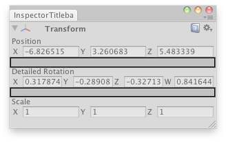

EditorGUILayout.Space
public static void Space();
Description 描述
Make a small space between the previous control and the following.

Custom inspector that shows the X,Y,Z,W quaternion components of a transform.
// Create a custom transform inspector that shows the X,Y,Z,W quaternion components // instead of the rotation angles.
using UnityEditor; using UnityEngine;
public class EditorGUILayoutSpaceField : EditorWindow { bool fold = true; Vector4 rotationComponents; Transform selectedTransform;
[MenuItem("Examples/Space between controls")] static void Init() { EditorWindow window = GetWindow(typeof(EditorGUILayoutSpaceField)); window.Show(); }
void OnGUI() { if (Selection.activeGameObject) { selectedTransform = Selection.activeGameObject.transform; fold = EditorGUILayout.InspectorTitlebar(fold, selectedTransform); if (fold) { selectedTransform.position = EditorGUILayout.Vector3Field("Position", selectedTransform.position); EditorGUILayout.Space();
rotationComponents = EditorGUILayout.Vector4Field("Detailed Rotation", QuaternionToVector4(selectedTransform.localRotation));
EditorGUILayout.Space(); selectedTransform.localScale = EditorGUILayout.Vector3Field("Scale", selectedTransform.localScale); } selectedTransform.localRotation = ConvertToQuaternion(rotationComponents); EditorGUILayout.Space(); } }
Quaternion ConvertToQuaternion(Vector4 v4) { return new Quaternion(v4.x, v4.y, v4.z, v4.w); }
Vector4 QuaternionToVector4(Quaternion q) { return new Vector4(q.x, q.y, q.z, q.w); }
void OnInspectorUpdate() { this.Repaint(); } }